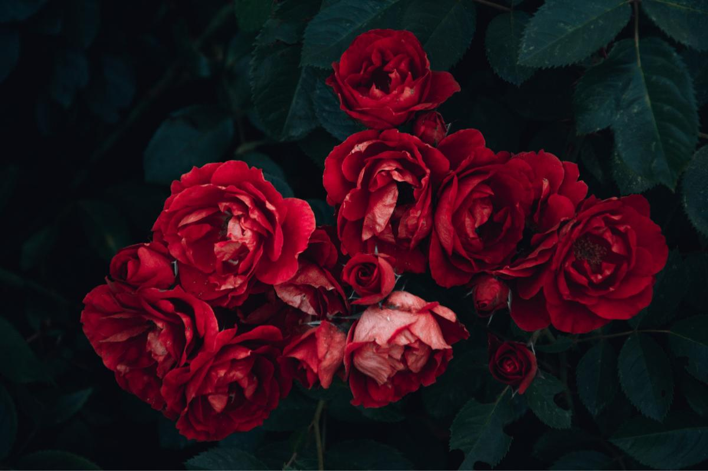
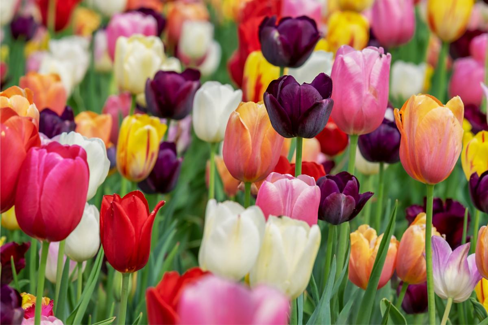
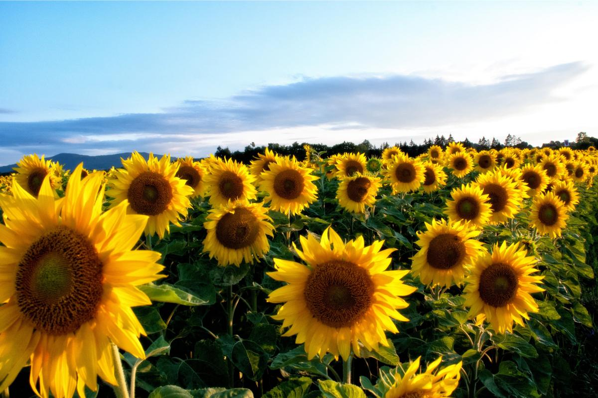
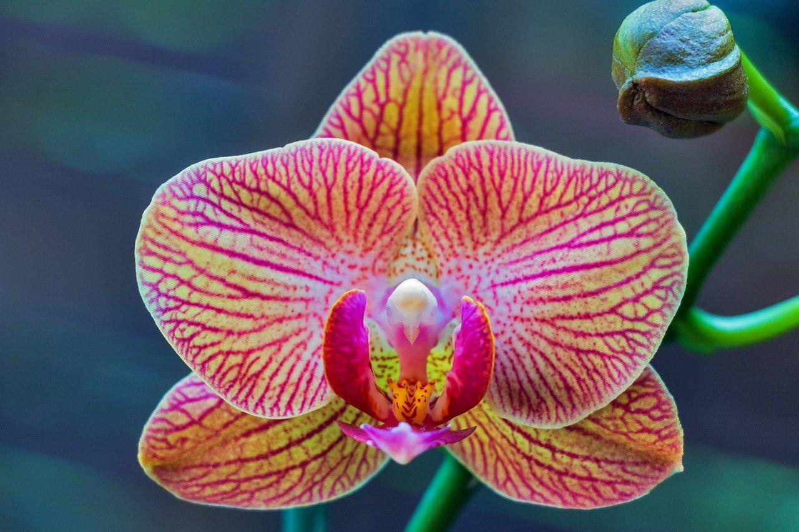

 Las rosas son todo un género de arbustos espinosos, ampliamente conocidos por la belleza de sus flores, de fragancia muy característica. Sus flores forman capullos de pétalos de varios tonos, aunque las rosas más típicas y clásicas son las de color rojo intenso. Es costumbre en muchos países regalarlas como símbolo de amor romántico, aunque dependiendo del tipo y el color de la rosa y de la cultura, pueden tener distintos significados. Actualmente existen más de 30.000 variedades de rosas, y siguen apareciendo nuevas en cada temporada, fruto de la hibridación.
 Los tulipanes o tulipa son también todo un género de plantas, en este caso de tipo bulboso y perenne. Existen unas 150 especies de tulipanes, así como una enorme cantidad de cultivares hibridados. Son plantas que rara vez sobrepasan los 50 cm de altura, con llamativas flores de 6 pétalos, muy bonitas y en una vasta variedad de colores, tamaños y formas. Es una planta muy extendida gracias a su gran éxito como flor ornamental.
 El girasol, o Helianthus annus, es uno de los tipos de flores más conocidas en todo el mundo. Su popularidad se debe, sobre todo, a parecido con el sol y a su capacidad de orientarse siguiendo el desplazamiento de este en el cielo, de forma que recibe siempre toda la luz posible de él. La flor del girasol no es solo una como puede parecer, sino que está formada por varias pequeñas flores tuberosas. Son plantas que crecen a una velocidad vertiginosa, que pueden llegar a alcanzar alturas de hasta 2 metros.
 Las orquídeas son otro de los tipos de flores más reconocibles para todo el mundo. Son famosas a nivel mundial por el aspecto exótico que tienen y existe una grandísima variedad. Sus flores son muy bellas y por esto son muy buscadas para decorar. Aunque pueden parecer difíciles de cuidar, tan solo hay que conocer bien sus necesidades básicas. Siempre tienes hay que conocer el tipo de orquídea que tenemos porque según esto, cambiarán sus necesidades en algunos aspectos. El significado de las orquídeas es la belleza, la admiración, el aprecio, la pureza y la eternidad. Según su color puede cambiar su significado, siendo más relacionado con este y no solo con la planta en sí.